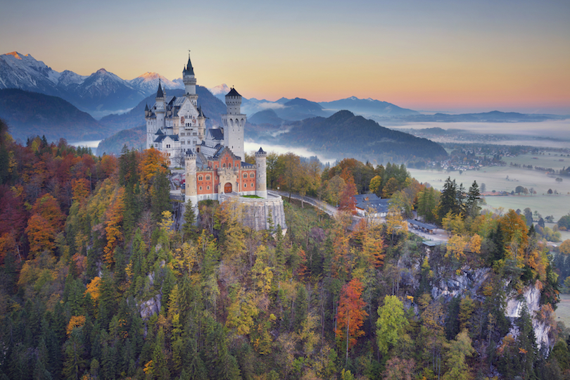
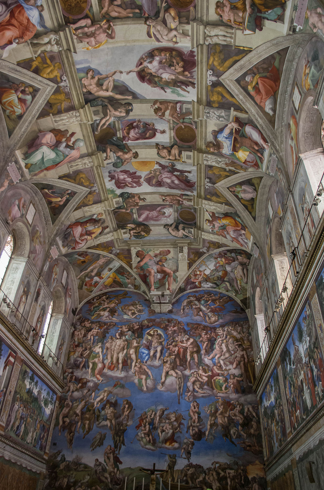

The colosseum, arguably the main symbol of Rome, 2000 years on and it’s Italy's top tourist attraction. A grand construction that, with almost 2,000 years of history, will expose you to the way of life in the Roman Empire. Located just east of the Roman Forum, it is the most thrilling of the city’s ancient sights. Inaugurated in AD80, the 50,000 seat colosseum, built an underground complex where animals were caged and stage sets prepared. The colosseum once held games involved gladiators fighting wild animals or each other.

The Louvre, one of the world’s most renowned museums, originally a Royal Palace, is a must visit for anyone with a flair for the arts. The museum holds over a million works of art, amongst the museum’s most celebrated works of art include the Mona Lisa and Venus of Milo. As the largest museum in the world, and one of the most visited its located in the heart of Paris, next to the River Seine. Roughly 8 million people venture to visit the museum every year. Whilst also holding a lot of history inside the musuem, the building itself has a large history. This large tourist attraction was originally built as a fortress in the 12th century to protect Parisians against Viking attacks, the Louvre became a museum in 1793, during the French Revolution. It was also used as a prison and once an office for finance ministry. During ww2, the Nazis used the Louvre as a storeroom for stolen art.
Often referred to as the ‘fairytale castle’, Neuschwanstein castle is one of the most visited castles in Germany and one of the most popular tourist destinations in Europe. This fairytale castle, was built by King Ludwig II of Bavaria, also known as ‘the fairytale kind’. Neuschwanstein castle is a sort of the paradox, it was built in the 19th century in Bavaria, in a time when castles no longer had strategical and defensive purposes. Neuschwanstein Castle was built in his honor and many rooms in the castle’s interior were inspired by Wagner’s characters. Neuschwanstein literally means “New Swan Castle” referencing of “the Swan Knight” one of the Wagner’s characters. Neuschwanstein’s positioning also adds to its fairytale. The castle is located in the alps in Bavaria, near the town of Fussen, in a magnificent landscape, on the top of a hill. Neuschwanstein overlooks the Hohenschwangau valley. If you come to visit this castle, you will be amazed by the extremely beautiful landscape that surrounds it.
The Sistine chapel, located in the official home of the pope, Vatican City, is renowned for renaissance frescoes by Michelangelo. This chapel attracts 5 million people a year. For such an important building the Sistine Chapel is remarkably plain outside – a high, block-like rectangular brick building without adornment. It has no grand façade and no processional entrance door: all entry points are internal, from other parts of the Papal Palace The most important artworks in the chapel are the frescoes by Michelangelo on the ceiling and on the west wall behind the altar. The frescoes on the ceiling, collectively known as the Sistine Ceiling, were commissioned by Pope Julius II in 1508 and were painted by Michelangelo in the years from 1508 to 1512. They depict incidents and personages from the Old Testament.